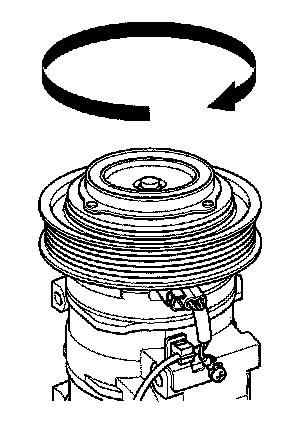
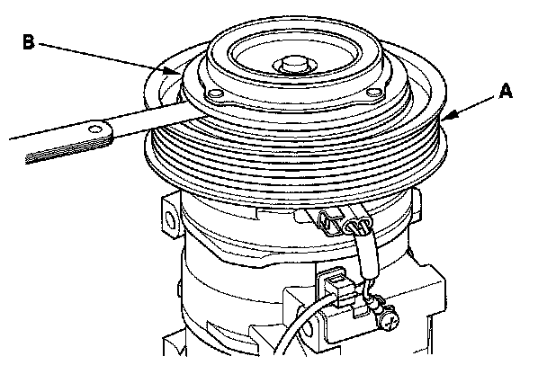
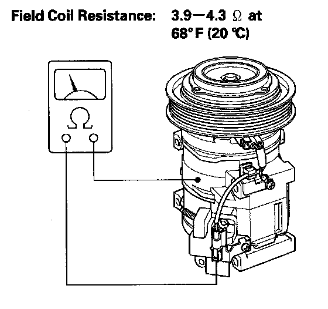

Compressor Clutch: Testing and Inspection
A/C Compressor Clutch Check1. Check the pressure plate for discoloration, peeling, or other damage. If there is damage, replace the clutch set.

2. Check the pulley bearing play and drag by rotating the pulley by hand. Replace the clutch set with a new one if it is noisy or has excessive play/drag.

3. Measure the clearance between the pulley (A) and the pressure plate (B) all the way around. If the clearance is not within specified limits, remove the pressure plate and add or remove shims as needed to increase or decrease clearance.
Clearance: 0.30 - 0.60 mm (0.012 - 0.024 in.)
NOTE: The shims are available in three thicknesses: 0.1 mm, 0.3 mm, and 0.5 mm.

4. Measure the resistance of the field coil. If the resistance is not within specifications, replace the field coil.